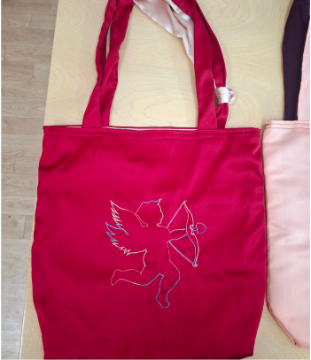
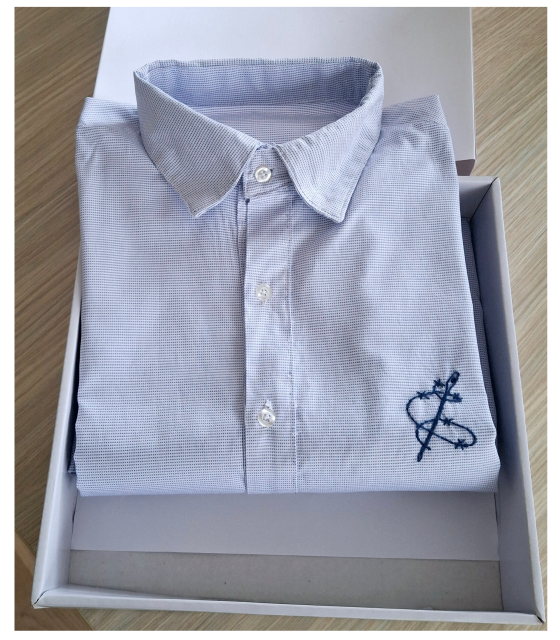
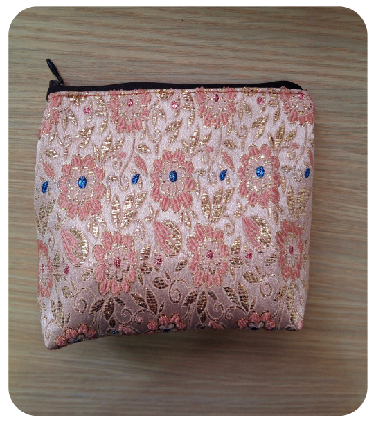
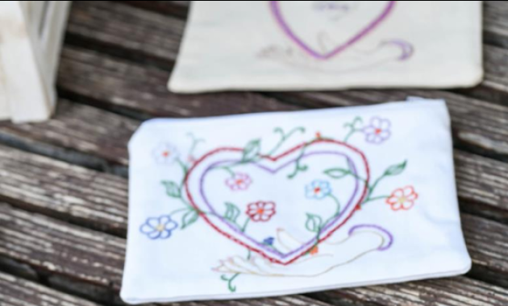

Во затворската работилница, конецот и иглата не се само обични алатки – тие се мост кон внатрешна слобода. Со секој бод и секои трпеливи движења плетат ташни и кошули, вежбајќи истовремено дисциплина и самоконтрола. Во секој плетен производ е вткаена енергија, вниманието и желбата да се создаде нешто уникатно. Процесот на плетење бара смиреност и концентрација, помагајќи им да ја насочат мислата кон нешто позитивно. Ова е креативен простор каде што времето не е само казна, туку можност за градење нови вештини и за изразување на креативноста. Нашите ташни и кошули не се само производи – тие се симбол за нова можност за нов почеток и на доказ дека и во затворски услови може да создава убавина.
"Секој производ носи своја приказна и допринесува за ресоцијализација."
„Во секој бод и секој засек има дел
од мојата тишина. Работилницата ми е како терапија.“
„Сликите што ги цртам не се само
пејзажи — тие се мојот прозорец кон светот.“
„Работилницата ми дава мир и сила да
верувам дека можам да бидам подобар човек.“
„Кога плетам, чувствувам дека моите
раце зборуваат наместо мене. Во секој бод има дел од мојата борба.“




Уметност со игла и конец
Во затворската работилница, конецот и иглата не се само обични алатки – тие се мост
кон внатрешна слобода. Со секој бод и секои трпеливи движења плетат ташни и кошули, вежбајќи истовремено
дисциплина и самоконтрола. Во секој плетен производ е вткаена енергија, вниманието и желбата да се
создаде нешто уникатно. Процесот на плетење бара смиреност и концентрација, помагајќи им да ја насочат
мислата кон нешто позитивно. Ова е креативен простор каде што времето не е само казна, туку можност за
градење нови вештини и за изразување на креативноста. Нашите ташни и кошули не се само производи – тие
се симбол за нова можност за нов почеток и на доказ дека и во затворски услови може да создава убавина.
Вештината на обработка на дрво и создавање на уметнички дела преку резба е длабоко
вкоренета во нашата култура. Нашите корисници, со голема трпеливост и прецизност, ги трансформираат
обичните парчиња дрво во прекрасни фигури, икони и декоративни предмети. Секој засек со длетото бара
мирна рака и целосна фокусираност, што ја прави оваа активност исклучително терапевтска.
Преку работата со дрво, тие не само што создаваат уникатни предмети со висока естетска вредност, туку и
учат на трпение, истрајност и внимание кон деталите. Овие ракотворби се доказ дека со вистинскиот алат и
посветеност, од суров материјал може да се извајa уметност која го облагородува просторот и ја раскажува
приказната за личната трансформација на авторот.
Во затворот, хартијата и боите стануваат прозорец кон
слобода. Затворениците цртаат пејзажи, куќи, дрвја и небо — сцени што ги потсетуваат на светот надвор,
но и на светот во нив. Секоја линија е обид да се изрази тишината, секоја боја — чувство што не може да
се каже со зборови.
Цртањето бара концентрација, трпение и внатрешна рамнотежа. Работилницата станува место каде што
уметноста не само што се учи, туку и се чувствува. Сликите не се само визуелни прикази — тие се
сведоштва за надеж, копнеж и човечност.
Во секоја слика има дел од авторот: спомен, сон, или момент на мир. Тоа е начин да се создаде убавина
таму каде што ретко се гледа, и да се потсети дека и зад решетки, човекот може да твори.
Во тишината на затворската работилница, каде времето тече поинаку, глината станува
глас. Грнчарството овде не е само занает – тоа е процес на преобразба. Осудените лица преку грнчарството
учат да создаваат, а не да уништуваат. Во секое грне, чинија или вазна, се втиснува нивната историја,
нивната борба и нивната желба за нов почеток. Работата со глина бара концентрација, дисциплина и
емпатија – вредности што често недостасуваат во нивните животи пред затворот.
Овие грнчарски производи не се само предмети – тие се сведоштва. Преку продажба на овие рачно изработени
предмети, се поддржува рехабилитацијата и се гради мост кон заедницата. Купувачите не добиваат само
уникатен производ – тие стануваат дел од приказна за надеж, достоинство и втори шанси.